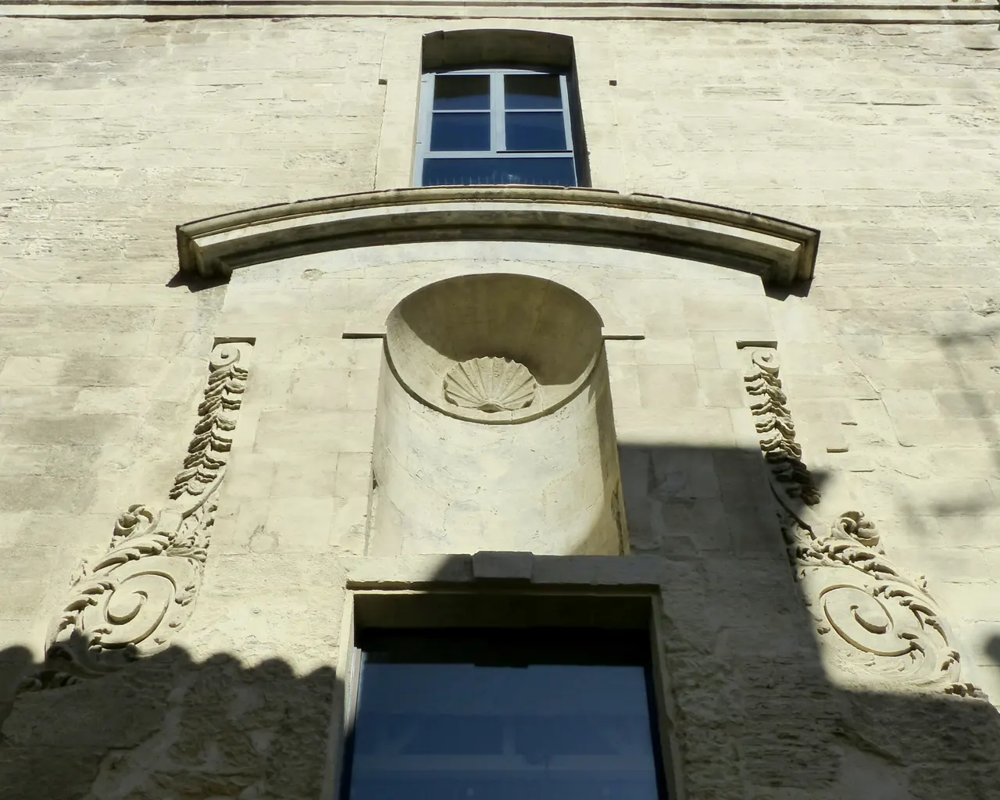

{kind=link}

Carrières des Lumières
높이 15m 거대한 지하 백색 석회암 채석장 동굴 전체를 디지털 캔버스로 변모시킨 세계 최초·최대 규모의 몰입형 미디어 아트 공간. 7,000㎡ 암벽과 바닥을 감싸는 빛과 음악의 향연.

론(Rhône) 강변을 따라 파스텔톤 가옥과 덧창, 조약돌 골목이 이어지는 아를의 옛 어부와 뱃사공 주거 지구. 관광지 인파를 벗어난 조용한 로컬 생활권과 폴 두메르 광장의 아늑한 카페 테라스.
아를 남서쪽 론(Rhône) 강변 제방을 따라 형성된 가장 아늑하고 진솔한 옛 어부와 선원들의 전통 주거 지구(Quartier des Mariniers)다.
거대한 로마 유적과 관광객 인파로 북적이는 중심부에서 불과 한 블록 벗어났을 뿐이지만, 좁은 조약돌 골목길마다 집주인들이 내놓은 화분, 파스텔톤 덧창, 17~18세기 소박한 석조 파사드가 정겨운 남프랑스 시골 골목의 정취를 고스란히 간직하고 있다.
지구 중심인 폴 두메르 광장(Place Paul Doumer)은 현지 주민들이 모여 에스프레소나 맥주를 마시는 아담한 플라타너스 쉼터이며, 골목 끝에서 론 강 제방길(Quai de la Roquette)로 올라서면 탁 트인 강물과 노을을 감상할 수 있다.
"유적지 관람의 피로를 씻어내고, 카메라를 든 채 화려하지 않은 아를 주민들의 소박한 일상 속을 조용히 거닐기에 가장 평화로운 주거 골목이다." 폴 두메르 광장의 로컬 카페에서 30분간 휴식을 취하고, 꽃 화분이 가득한 Rue Roquette 골목을 지나 론 강변 제방으로 나서는 45분 산책 코스를 추천한다.
| 항목 | 상세 정보 |
|---|---|
| 위치 | Quartier de la Roquette, 13200 Arles |
| 입장료 | 상시 개방 / 무료 |
| 보행 팁 | 구도심 중심 Place de la République에서 도보 5분 거리 / 조용한 주거지이므로 정숙 유지 권장 |
| 추천 카페 | Place Paul Doumer 주변의 로컬 카페 테라스 |
높이 15m 거대한 지하 백색 석회암 채석장 동굴 전체를 디지털 캔버스로 변모시킨 세계 최초·최대 규모의 몰입형 미디어 아트 공간. 7,000㎡ 암벽과 바닥을 감싸는 빛과 음악의 향연.

기원전 6세기 켈트 성소에서 헬레니즘 도시를 거쳐 로마 제국의 온천 휴양도시로 번영했던 거대한 고대 발굴 유적지. 갈리아에서 가장 완벽하게 보존된 기원전 1세기 로마 영묘와 개선문 '레 장티크(Les Antiques)'.

알피유(Alpilles) 산맥 해발 245m 석회암 절벽 위에 우뚝 솟은 중세 독수리 요새 마을. 자연 암반과 성벽이 하나로 결합된 레보 성채(Château des Baux) 폐허와 올리브 계곡 대파노라마.

세계적인 식물학자 파트리크 블랑의 300㎡ 거대한 수직 정원(Mur Végétal) 외벽 아래 40여 개 프로방스 전통 식재료 좌판이 모인 아비뇽의 활기찬 실내 중앙 미식 시장.

14세기 가톨릭 교황청이 로마를 떠나 68년간 머물렀던 서유럽 최대의 중세 고딕 요새 궁전. 베네딕토 12세의 구궁전과 클레멘스 6세의 신궁전, 마테오 조바네티의 프레스코화와 히스토패드 3D 증강현실 복원.

12세기 론(Rhône) 강을 건너 교황령 아비뇽과 프랑스 왕국을 잇던 920m의 유일한 석조 다리. 소빙하기의 거센 홍수로 22개 아치 중 4개와 2층 생니콜라 예배당만 남은 유네스코 세계유산.